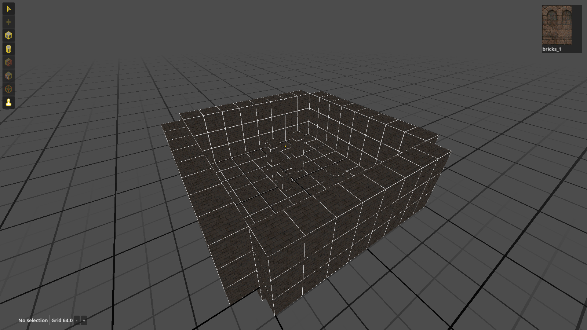
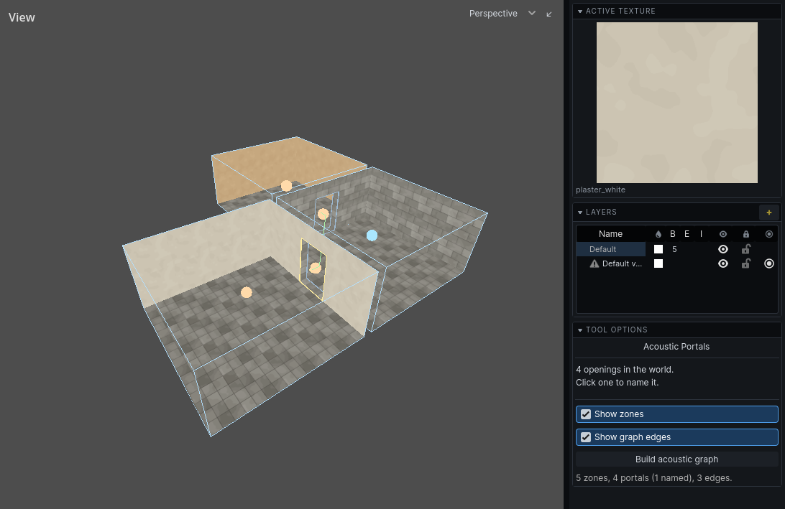

Draft. Not listed on the blog and not indexed.
Brief history of Hammerite
I started Hammerite in March 2024 as a small brush editor. It is now a level editor, a lightmapper, a sound system and a navigation builder for Godot, written in C++, and it just had two releases in one week. This is how it got here, including the parts I had to throw away.
Before Hammerite
Before Hammerite I tried to make Godot's own CSG nodes work for the kind of levels I wanted to build. In 2022 I opened a few pull requests for them: a fix for CSG gizmos, which was merged, and two bigger ones that added per-face materials and UVs and physics materials to CSG shapes. Those two are still open.
In a PR meeting the maintainers decided that one of them may be adding too much to CSG, which was mainly created for blocking out and prototyping. That makes sense: CSG nodes are not meant for building production levels, and I don't think the wider community wants them to be either. I was trying to solve my own problem in the wrong place.
The other thing my game needed was baked light that can still be switched on and off or made to flicker. In 2023 I proposed lightmap layers for Godot, and the same idea was part of Hammerite from the very beginning. So instead of bending Godot's tools to fit, I started Hammerite as its own project.
2024: a brush editor
The first commit is from March 2024. Within a month I had boxes and cylinders, a clip tool, extrude and a texture browser. It worked like Valve's Hammer and the Quake editors: the level starts as empty space, and you add solid blocks to it until there is something to stand on.
The editor has run inside the game from the very beginning. The first version was not a plugin for Godot's own editor, it was a Godot project whose main scene was the level editor itself. So you edit the level in the same program that runs it.
In November 2024 Hammerite became a Godot addon, and on the same day it went into the first commit of City of Thieves, the stealth game I am making with it. That first commit already had a key for switching between editing and playing in the same running game: change a room, press the key and walk into it, without saving, exporting or restarting anything. That edit-test loop has been the core idea of Hammerite ever since, and pretty much every feature has been tried in City of Thieves first.

The first lightmapper
Lighting came early. In May 2024 I wrote a lightmapper that did radiosity on the CPU: every face is cut into patches, the lamps light them, and then the light bounces from patch to patch. It looked right on a test room. It did not scale at all.
The problem is that in radiosity every patch trades light with every other patch it can see, so the work grows a lot faster than the level does. A real level has a lot of patches. I spread the work over threads later that year, but that did not change the shape of the problem.
In January 2025 I started over on the GPU, with compute shaders. It took until August 2025 to get it right. That month the GPU lightmapper started working, I deleted the CPU path, and radiosity was running on the GPU too. The commit message was "Working radiosity!"
Sound propagation
In November 2025 City of Thieves got sound. A stealth game needs it to work properly: you should hear footsteps through a doorway, and a guard should hear you in the next room but not through a metre of stone. I built it the way the Thief games did, with sound travelling from room to room through the openings between them.
For that the game has to know what the rooms are and where the doorways are, and an additive editor does not know either. So every room got an audio zone placed by hand, and every doorway a portal, a quad sized to fit it. It worked, but every change to a level meant checking the markers again.

2026: four addons and the subtractive workflow
By then the game and the editor had grown into each other. The sound system, for example, was written inside City of Thieves. In August 2026 I pulled them apart: Hammerite became separate addons for the core, the editor and audio, and the sound system moved out of the game into the audio addon. Nothing in Hammerite may depend on a particular game, and the test suites check that.
Later that month came the biggest change so far, the subtractive workflow: solid is the default, and rooms are carved out of it with air brushes, like in Looking Glass's Dromed. The compiler works out the rooms and the openings between them by itself, so the hand-placed audio zones went, and so did the tool for placing them. That week was 188 commits, and it gets a post of its own.
I wrote the fourth addon, navigation, the same week. It was built on the carved world from the first commit: walkable ground is just the floor of the air.

What I learned
- Don't make people say what the geometry already knows. The hand-placed zones worked, but each one was a second copy of the level to keep up to date.
- Some work belongs on different hardware. CPU radiosity was not a slow version of the right thing. It was the wrong place to do it.
- A real game is the best test suite. Almost every decision in Hammerite was made because City of Thieves needed something the editor could not do yet.
- Elli